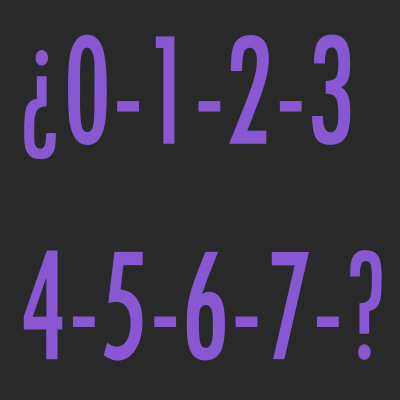
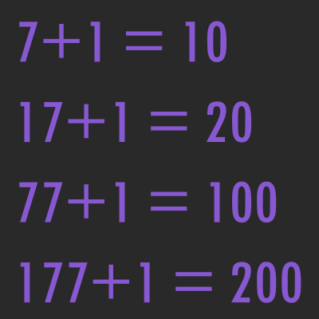

¿Qué es el Sistema Octal?

El sistema octal es un sistema de numeración posicional que tiene como base el 8. Esto quiere decir que tiene 8 símbolos válidos para formar números {0, 1, 2, 3, 4, 5, 6, 7,}.
En la informática a veces se utiliza la numeración octal en vez de la hexadecimal. Tiene la ventaja de que no requiere utilizar otros símbolos diferentes de los dígitos. Sin embargo, para trabajar con bytes o conjunto de ellos, suele ser más cómodo el sistema hexadecimal.
¿Cómo contar con el Sistema Octal?

El conteo en el sistema octal es bastante parecido al conteo con el sistema decimal con la diferencia que disponemos de menos símbolos para representar números.
Si contamos desde 0, incrementando una unidad cada vez, al llegar a 7, hemos agotado los símbolos válidos, y si queremos seguir contando no disponemos de un nuevo símbolo para representar la cantidad que hemos contado. Por tanto añadimos una nueva columna a la izquierda del número y reutilizamos los símbolos válidos.